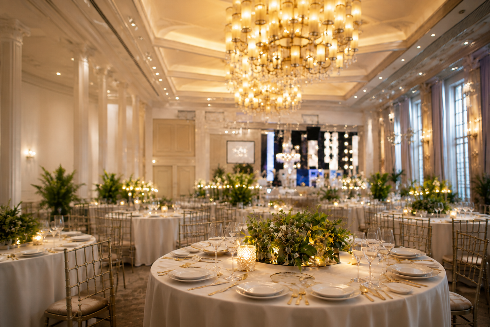
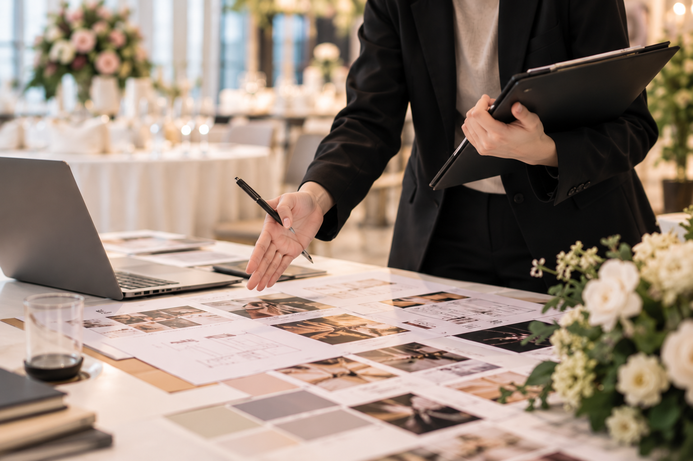
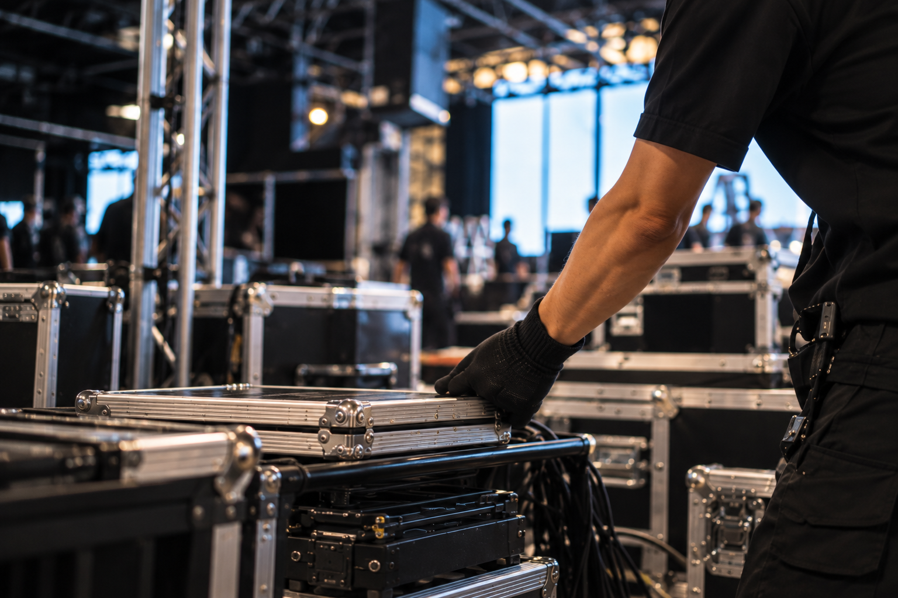
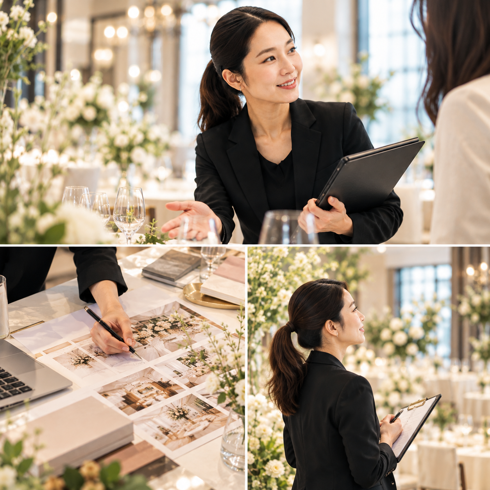
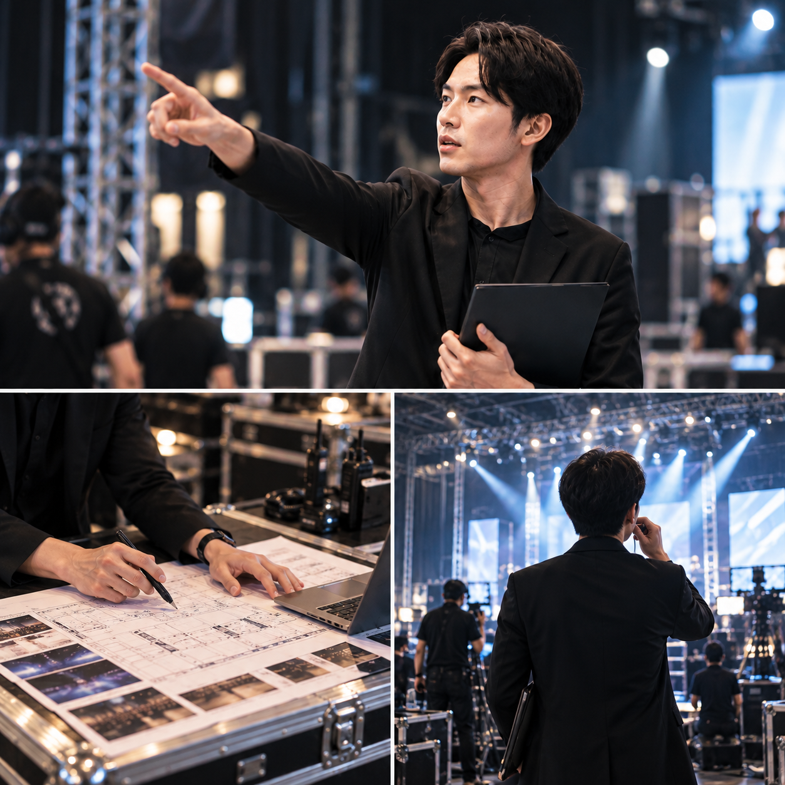
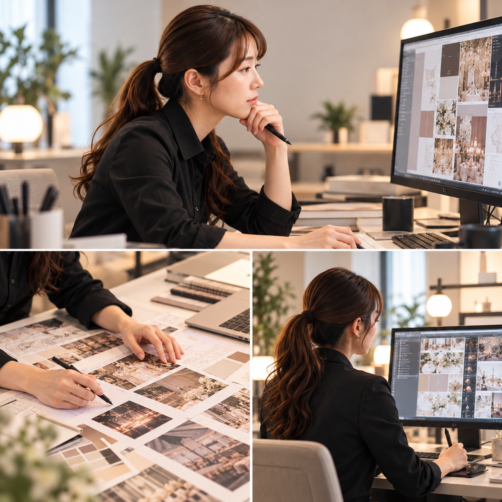
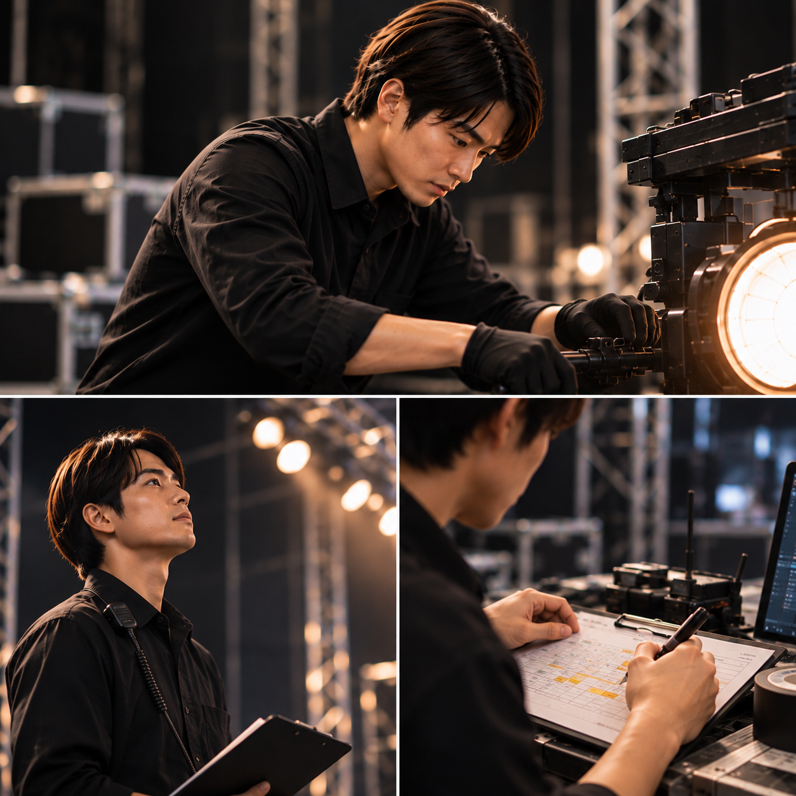

01
DISCOVER
ヒアリング・目的の明確化
お客様との打ち合わせを通して、イベントを開催する目的や背景、実現したいことを丁寧にヒアリングします。 参加者の属性や人数、会場の条件、予算、開催時期なども確認し、イベントの方向性を整理。 ご要望の背景にある課題や期待までくみ取り、企画の土台をつくります。
関わる職種
- Event Planner
- Director
- Designer
- Production

CREATE
SPECIAL MOMENTS.
ひとりでは、つくれない感動がある。
空間・時間・体験をデザインし、特別な瞬間をカタチにする。
CREATE LINEは、ホテルイベントの企画・制作・運営までを
ワンストップで手掛けるイベントプロデュース会社です。
私たちはイベントを「贈る」のではなく、
その日、その場所、その人だけの 忘れられない体験を創り上げています。
職種紹介




イベントができるまで
お客様へのヒアリングから企画立案、会場設営、本番の運営、そして開催後の振り返りまで。
さまざまな専門性を持つスタッフが連携し、ひとつのイベントをつくり上げます。
DISCOVER
お客様との打ち合わせを通して、イベントを開催する目的や背景、実現したいことを丁寧にヒアリングします。 参加者の属性や人数、会場の条件、予算、開催時期なども確認し、イベントの方向性を整理。 ご要望の背景にある課題や期待までくみ取り、企画の土台をつくります。
関わる職種
PLAN
ヒアリングした内容をもとに、イベントのコンセプトやテーマ、会場の使い方、演出方法を具体的に企画します。 ステージ構成や会場レイアウト、プログラムの進行、必要な設備などを検討し、 企画内容を実現するための計画を立案。 お客様への提案と打ち合わせを重ねながら、イベント全体の設計を進めます。
関わる職種
CREATE
決定したコンセプトをもとに、会場装飾やステージデザイン、映像、グラフィック、進行台本など、 イベントに必要な制作物を具体化します。 会場の雰囲気やブランドイメージ、参加者の視点を考慮しながら、色彩や素材、照明、演出の細部まで検討。 各スタッフと連携し、企画段階のアイデアを目に見えるカタチへと仕上げていきます。
関わる職種
PRODUCE
開催日に向けて、会場の設営や装飾の施工、機材・備品の手配、スタッフの配置などを進めます。 本番前にはリハーサルを行い、進行や演出、音響・照明のタイミング、スタッフ間の連携を確認。 イベント当日は、会場全体の状況を把握しながら進行を管理し、予期せぬ変更にも柔軟に対応します。 すべてのスタッフが役割を果たし、イベントの成功を支えます。
関わる職種
REFLECT
イベント終了後は、開催結果や参加者の反応、運営上の課題などを整理し、実施報告としてまとめます。 準備から本番までの取り組みをチームで振り返り、成果や改善点を共有。 お客様のご意見も踏まえながら、次回の企画や運営に活かせる提案へとつなげていきます。 一度の開催で終わらせず、継続的な価値を生み出すことを目指します。
関わる職種
THERE IS NO SINGLE ANSWER
固定観念にとらわれず、状況や課題に応じて、よりよい方法を探り続ける。
EXCELLENCE IN EVERY DETAIL
空間の設えから演出のタイミングまで、細部へのこだわりがイベント全体の質を高める。
BEYOND EXPECTATIONS
お客様の想いに真摯に向き合い、プロならではの発想と提案で、期待を超える体験を生み出す。
働く人を知る
それぞれの専門性を活かしながら、チームでひとつのイベントをつくり上げる。
現場で働く先輩たちの声を、少しだけご紹介します。

EVENT PLANNER
イベントプランナー
入社3年目
「お客様の想いを企画に落とし込み、カタチになったときの感動は格別です。」

DIRECTOR
ディレクター
入社5年目
「大変なこともあるけれど、チームでイベントを成功させた瞬間が一番うれしい。」

DESIGNER
デザイナー
入社4年目
「空間のデザインで、イベントの世界観をつくり上げる。そこに大きなやりがいがあります。」

PRODUCTION
制作スタッフ
入社2年目
「準備から本番まで、裏側からイベントを支える。自分の仕事が感動の一部になっていると感じます。」